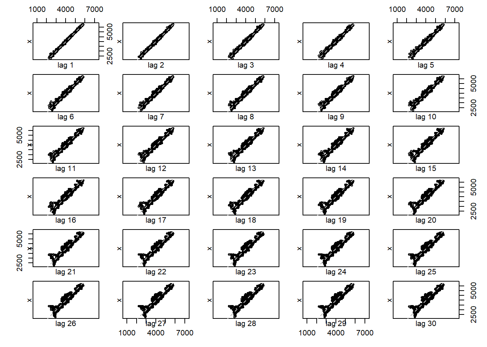
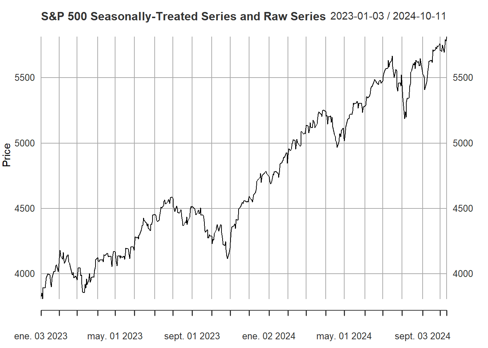
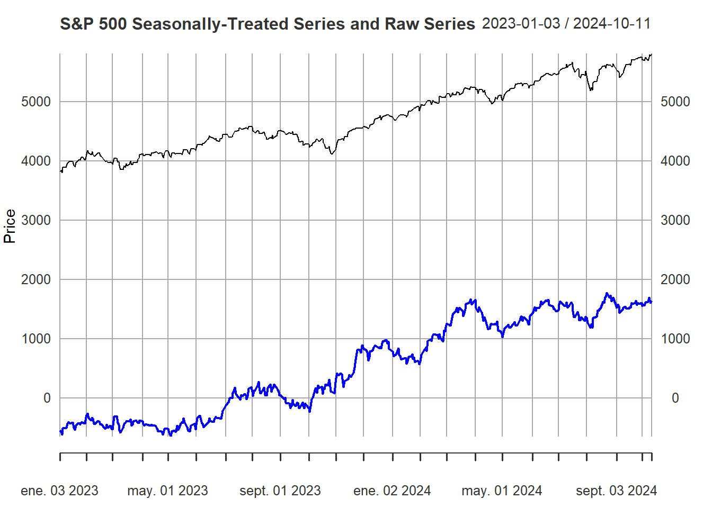
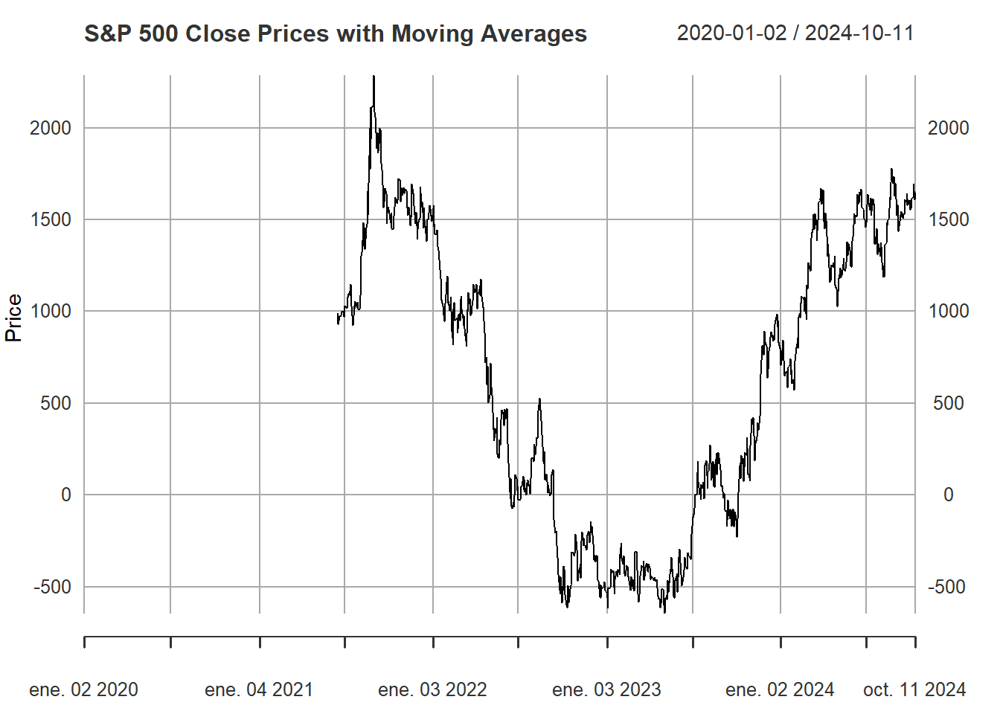
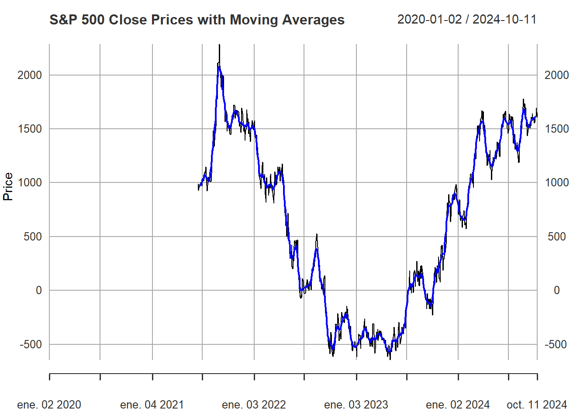
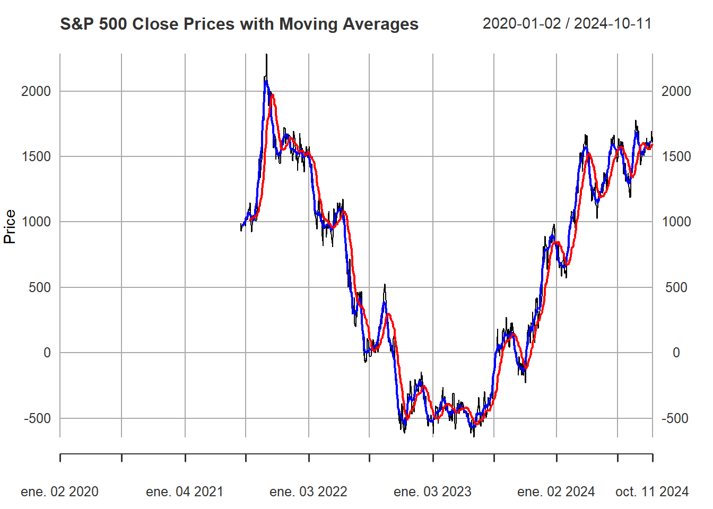
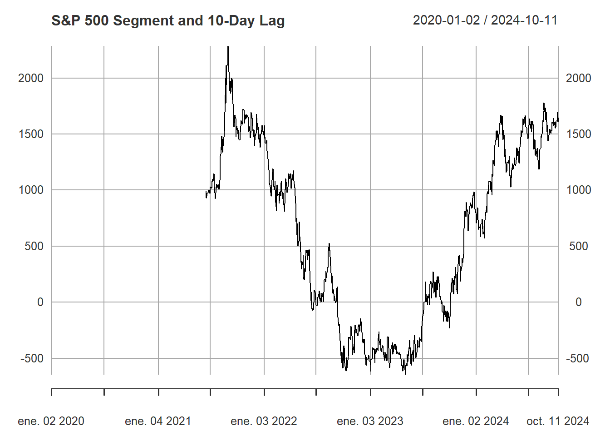
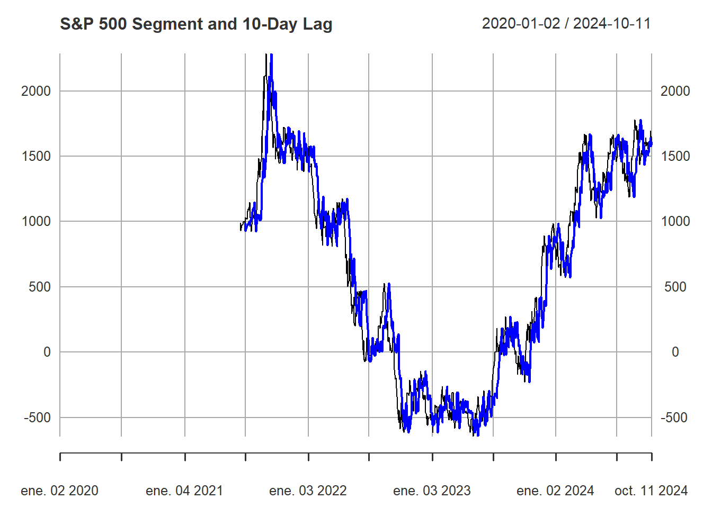

2 Análisis gráfico del comportamiento del S&P 500
2.1 Tratamiento previo del dataset
Dada la base de datos escogida para las actividades del curso, se procede a realizar un análisis gráfico de los posibles patrones que pueda expresar esta serie de tiempo, particularmente, considerando los conceptos de aproximación a través de media móvil (MA), rezagos en la serie, y estacionalidad.
Inicialmente, se procede con la consecusión del formato del dataset como serie de tiempo, empleando el paquete xts de R, el cual permite estructura el dataset en función de sus fechas, de tal forma que es posible tener en cuenta las brechas generadas por los fines de semana y holidays de esta serie de tiempo en días.
#install.packages("xts")
# Example if the Date is in 'MM/DD/YYYY' format
spx_data$Date <- as.Date(spx_data$Date, format = "%m/%d/%Y")
library(xts)
# Convert your data to an xts object
# Assuming `spx_data` has a column 'Date' in Date format and 'Close/Last' for prices.
spx_Close_ts <- xts(spx_data$`Close/Last`, order.by = spx_data$Date)
head(spx_Close_ts)## [,1]
## 2014-10-14 1877.70
## 2014-10-15 1862.49
## 2014-10-16 1862.76
## 2014-10-17 1886.76
## 2014-10-20 1904.01
## 2014-10-21 1941.282.2 Serie de tiempo en bruto
Así, es posible extraer el gráfico preliminar del comportamiento de la serie de tiempo. Nótese que se consideran las fechas desde el 14 de octubre de 2014 hasta el 11 de octubre de 2024.
plot(spx_Close_ts, main = " ", ylab="S&P500 Index", col = "deepskyblue", xlab= "Date")
title(main="S&P500 Index (Starting at October 14th of 2014)")
El gráfico permite denotar una tendencia bastante obvia en cuanto al contexto de la serie de tiempo, ésta es la variación en la actividad del índice en función de la pandemia de 2020, denotada por una fuerte caída del precio del índice alrededor del inicio de 2020. Así, el análisis previo a realizar en este documento considerará un segmento de la serie de tiempo comprendido desde el primero de enero de 2020.
Además, el gráfico de rezagos presentada debajo permite observar el grado de correlación entre las obervaciones diarias y el número de rezagos a evaluar (hasta 30 rezagos), dada la estructura del mercado bursátil inmersa en el comportamiento diario, es de esperarse una alta correlación entre la serie y sus rezagos, de tal manera que una alta correlación positiva puede denotarse incluso hasta el límite del conjunto de gráficos construidos, pues la tendencia de correlación lineal entre las observaciones puede identificarse claramente en todas las instancias, incluso a pesar de que sobre los últimos números de rezagos la tendencia lineal parece englobarse, mostrando signos de grados de aleatoriedad, esto se tendrá en cuenta al graficar la aproximación por rezagos de la serie más adelante.
# Subset data for the date range
spx_segment <- spx_Close_ts["2020-01-01/2024-10-11"]
lag.plot(spx_segment, lags = 30, do.lines = FALSE)
2.3 Estacionalidad y tratamiento
Un análisis propicio de esta serie de tiempo también implica cónsiderar los posibles efectos estacionales que pueden subyacer en el comportamiento del índice. Así, se provee una aproximación desestacionalizada de la serie a través del método de diferenciación estacional.
La aplicación de diferenciación estacional sustrae el valor del año anterior en la misma fecha para cada observación, de la siguiente manera:
\[ Y^* = Y_t - Y_u \] Donde \(Y^*\) es la serie de tiempo diferenciada estacionalmente, \(Y_t\) es el valor del datapoint, y \(Y_u\) es el valor correspondiente a la misma fecha del datapoint en el año inmediatamente anterior.
Esta es una técnica ideal para el tratamiento de efectos estacionales en series de tiempo diarias, pues permite aislar el comportamiento desestacionalizado del índice de manera simple y sin el requerimiento de una alta cantidad de observaciones que puedan denotar periodos estadísticamente significativos (como es requerido en el caso de ejercicios de desestacionalización de series anuales).
A continuación, se presenta el gráfico de comparación entre la serie diferenciada estacionalmente (color azul) y el gráfico del tramo de la serie original en el mismo intervalo de tiempo (color negro), de tal forma que es posible notar la diferencia en sus patrones de crecimiento. Claramente, la serie sin desestacionalizar denota un patrón de crecimiento más estable, en contraposición a los altibajos que presenta la serie desestacionalizada, de tal forma que es posible atribuir este crecimiento sostenido a los efectos estacionales.
# Seasonal differencing
seasonal_diff <- diff(spx_segment, lag = 365)
# Check the result
#plot(seasonal_diff, main = "S&P 500 - Seasonally Differenced Time Series")
spx_segment2 <- spx_Close_ts["2023-01-01/2024-10-11"]
#plot(spx_segment2, main = " ", ylab="S&P500 Index since 2021-01-01", col = "deepskyblue", xlab= "Date")
#title(main="S&P500 Index (Starting at January First of 2021)")
# Plot the original time series and the moving averages
plot(spx_segment2,
main = "S&P 500 Seasonally-Treated Series and Raw Series",
col = "black",
lwd = 1,
xlab = "Date",
ylab = "Price")
lines(seasonal_diff, col = "blue", lwd = 2)
# Adjust the legend position to "topleft" and include both MAs in the legend
legend("topleft",
legend = c("Original", "Seasonal Diff"),
col = c("black", "blue"),
lwd = 2,
inset = 1, # Adjust inset if needed to bring the legend inside the plot area
cex = 5) # Adjust `cex` to change the size of the legend text
Ahora, teniendo en cuenta la serie desestacionalizada, es posible presentar sus aproximaciones por medio de media movil (MA) y rezagos.
2.4 Aproximación por MA
Inicialmente, se presenta la sucesión de gráficos en los cuales se compara la evoluación de la serie desestacionalizada (en color negro) con sus aproximaciones por medio del cálculo de medias móviles a 10 días (color azul), y a 20 días (color rojo). Nótese cómo, a mayor cantidad de días considerados para la media móvil, se suaviza en mayor medida en comportamiento del índice.
#install.packages("zoo")
#install.packages("TTR")
library(zoo)
library(TTR)
# Calculate a 10-day simple moving average
spx_ma_10 <- rollmean(seasonal_diff, k = 10, fill = NA)
# Alternatively, using TTR for a 20-day moving average
spx_ma_20 <- SMA(seasonal_diff, n = 20)
# Plot the original time series and the moving averages
plot(seasonal_diff,
main = "S&P 500 Close Prices with Moving Averages",
col = "black",
lwd = 1,
xlab = "Date",
ylab = "Price")

lines(spx_ma_20, col = "red", lwd = 2)
# Adjust the legend position to "topleft" and include both MAs in the legend
legend("topleft",
legend = c("Original", "10-day MA", "20-day MA"),
col = c("black", "blue", "red"),
lwd = 2,
inset = 1, # Adjust inset if needed to bring the legend inside the plot area
cex = 5) # Adjust `cex` to change the size of the legend text
2.5 Aproximación por rezagos
Finalmente, se presenta en el mismo gráfico la serie desestacionalizada (color negro), en conjunto con su aproximación en función de 10 rezagos. Esta cantidad de rezagos se escoge en función de la observación del lag plot, pues, desde la observación informal, puede notarse que es hasta el rezago 10 donde se puede apreciar una relación lineal y directamente proporcional con mayor “pureza”, cabe recalcar que este criterio de selección carece de una verificación estadística con rigor, la cual puede alcanzarse al aplicar un modelo autoregresivo sobre la serie de tiempo, sin embargo, este ejercicio limita su alcance a la observación de las tendencias preliminares de manera gráfica, sin profundizar en modelos de ajuste y predicción.
# Create a 1-day lag for the subset
spx_lag_1_segment <- lag(seasonal_diff, n=10)
# Plot the original segment and the lagged values
plot(seasonal_diff, main = "S&P 500 Segment and 10-Day Lag", col = "black", lwd = 1)
lines(spx_lag_1_segment, col = "blue", lwd = 2)
legend("topright", legend = c("Original", "7-day Lag"),
col = c("black", "blue"), lwd = 1)